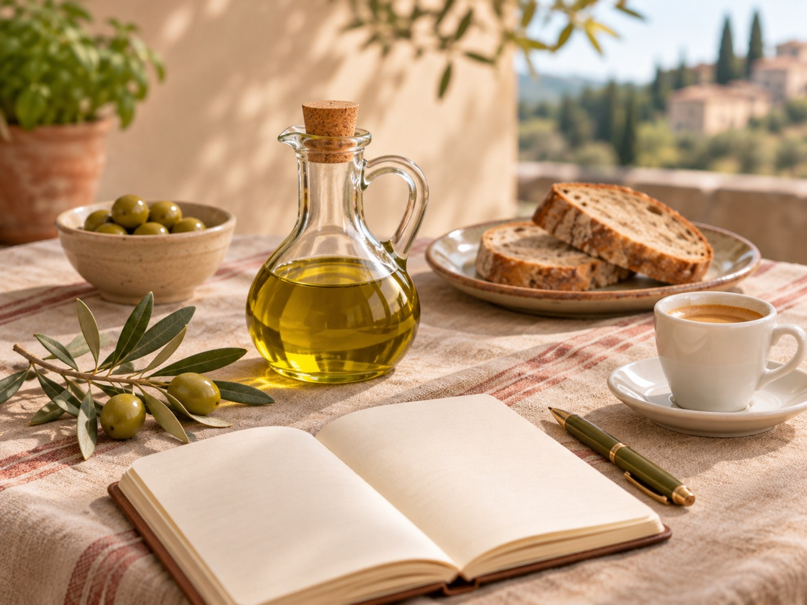

TRADIZIONI DEL MATTINO
La colazione di una volta ha un dettaglio che oggi quasi nessuno nota.
Pane, caffè, qualche oliva e un filo d'olio extravergine: nelle case del Sud la mattina ha sempre avuto un suo ordine preciso. Oggi molti lo riscoprono, e si chiedono perché ci fosse tanta cura in un gesto così semplice.
Un breve video editoriale racconta l'origine di quell'abitudine e il particolare che di solito passa inosservato.
GUARDA IL BREVE VIDEOPochi minuti, nessuna iscrizione. Basta un tocco per iniziare.
Il rito del mattino non è mai stato solo una questione di fretta.
LA DOMANDA
Perché certe abitudini della tavola resistono da generazioni?
Nelle cucine di famiglia ogni ingrediente aveva il suo momento: il pane del giorno, l'olio della stagione, il caffè servito senza fretta. Nessuno lo chiamava metodo, eppure tutti lo seguivano.
Il video parte da una domanda semplice: cosa possiamo imparare oggi da quei piccoli rituali, senza trasformare la colazione in una lista di regole?
«Il segreto di una buona giornata, a volte, sta nel modo in cui comincia.»SCOPRI IL RACCONTO

IL PARTICOLARE
Un oggetto, un gesto, una tradizione.
Nessuna ricetta complicata e nessuna promessa: solo uno sguardo curioso su come la cultura della tavola mediterranea è cambiata, e su cosa è rimasto uguale.
GUARDA IL VIDEO COMPLETOAvvertenza pubblicitaria: questo è contenuto editoriale sponsorizzato. Il video esterno può contenere l'offerta di un partner. Nessun acquisto viene effettuato su questa pagina.
Questa pagina ha finalità generali e informative. Non fornisce diagnosi, trattamenti o garanzie di risultati personali.